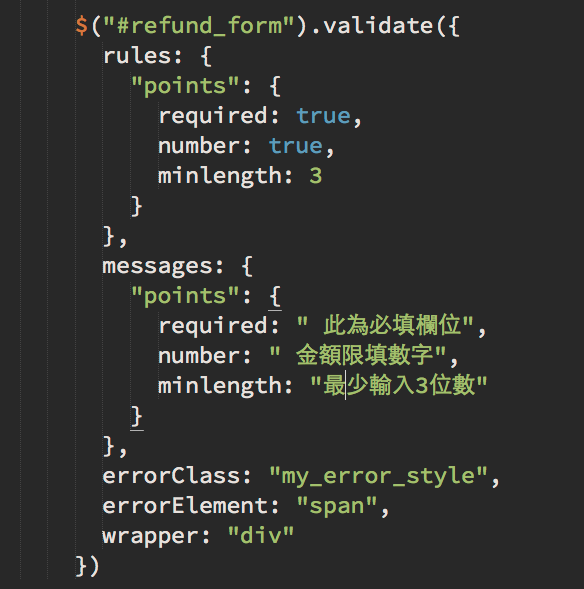
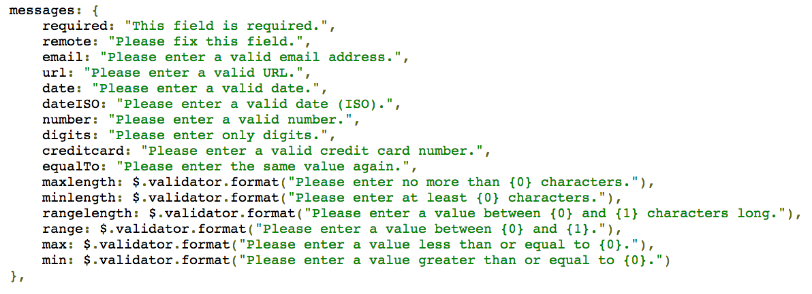
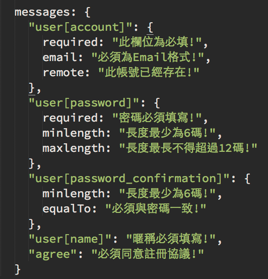
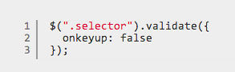
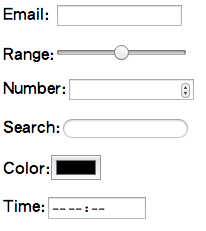
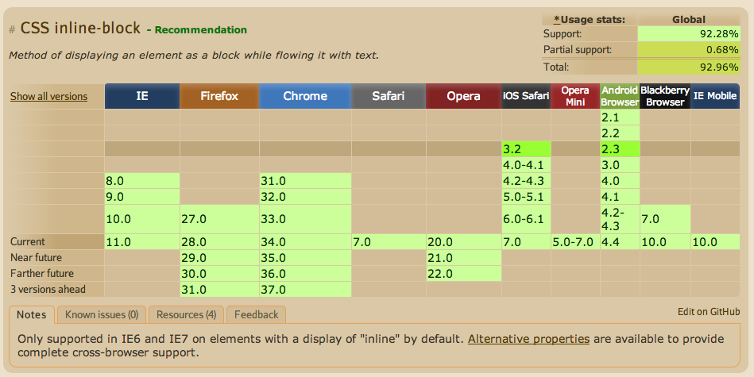

台中前端社群
Taichung Frontend Group
使用Jquery Validation
成為表單驗證的高手
黃竹藝
- a.k.a Chuyi Huang
- ROR開發者
- 朝成為前端工程師的目標前進
前端與後端的搭配

表單是前台與後台的交接點 (後端)
- 送出欄位內容的值是否正確必須以後台為主
- 內容處理的結果必須以後台為主
- 如果有錯誤，錯誤訊息的內容以後台為主
表單是前台與後台的交接點 (前端)
- 表單的輸入界面與細節(label, input...)以前台為主
- 表單的外觀風格，欄位順序以前台為主
- 提示與錯誤訊息顯示方式以前台設計為主
表單驗證到底是誰的工作?
-
前端的立場:
- 是後端的工作，因為我不知道使用者會輸入什麼
- 是後端的工作，因為我不做跟伺服器溝通的工作
- 是後端的工作，因為表單的內容最後是送到後端
-
後端的想法:
- 前台要分擔，因為正確的提示可以減少表單輸入的錯誤
- 前台要分擔，因為錯誤訊息的顯示都沒有考量
- 前台要分擔，因為在使用者送出表單前就可以做驗證
談談Jquery Validation
- 搭配Jquery，歷史悠久
- 容易上手，內建許多檢查方法
- 驗證成功前不送出表單
- 可依照事件處理訊息
- 可自訂錯誤訊息
- 可自訂錯誤訊息樣式
- 可使用ajax驗證遠端邏輯
安裝方式
- <script src="/jquery.js"></script>
- <script src="/jquery.validate.min.js"></script>
- <-- 非必要 -->
- <script src="/jquery.additional_methods.js"></script>
使用方式
- $("#form_id").validate();
- 使用rules定義欄位規則
- 使用messages客制錯誤訊息
- 可設定debug模式，無需送出表單
- 有callback可在驗證後處理特殊功能
- 使用errorElement, errorClass, validClass, errorContainer與wrapper設定錯誤樣式，用showErrors設定主要訊息
使用方式
在送出Submit前會檢查，如果有錯誤便會停止送出表單
驗證規則
- required: 是否必填
- url: 驗證網址格式正確性
- number: 是否數字
- email: 是否Email格式
- minlegnth: 最短長度
- maxlength: 最長長度
- rangelength: 長度範圍
- remote: 使用ajax驗證遠端
- equalTo: 比較兩欄位
- require_from_group method： 多選一必填
- 外掛additional-methods驗證US電話,郵遞區號
遠端驗證
- 輸入資料是否存在
- 需要驗證使用者權限
- 需要比對資料庫內容
錯誤訊息 - 預設錯誤訊息
直接在原始檔內修改
錯誤訊息 - 客制錯誤訊息
事件處理
啟動與取消特定事件
另外支持onkeyup, onfocusout, onclick, onsubmit等事件
Callback
- submitHandler: 按下submit時客制處理特定事件
- invalidHandler: 錯誤發生時的處理機制
- success: 單欄位驗證成功時的處理
- highlight: 單欄位驗證錯誤時的處置，e.g加入class
- unhighlight: highlight的反向操作
- showErrors: 整體表單任一欄位發生事件時顯示
- errorPlacement: 錯誤訊息擺放位置
客制驗證
- 可參考additional-methods裡面的寫法
- 特殊輸入值的處理，例如郵遞區號，統編身份證等計算
- 搭配正規表示式Regexp做驗證
- 返回true才算驗證過，反之跳出錯誤
錯誤樣式
- errorLabelContainer:
- errorElement: 錯誤訊息的顯示標籤
- errorClass: 錯誤訊息的class
- validClass: 驗證過時的class
- errorContainer: 錯誤訊息包住在某特定selector中
- wrapper: 包住errorElement的標籤
注意事項
- *注意: 欄位的"name"屬性是必要的
- 避免重複id
- 更多驗證: https://github.com/jzaefferer/jquery-validation/tree/master/src/additional
其他form表驗證工具
- Happy.js
- Parsleyjs
- Jquery Form Validator
- 很多...
囧rz 不會寫javascript，能夠做表單驗證嗎?
使用HTML5的input新屬性
- <input type="email" name="email">
- <input type="number" name="quantity">
- <input type="search" name="googlesearch">
- <input type="url" name="homepage">
- <input type="time" name="enrolltime">
- range, month, tel, color, week, datetime...
- required, step, min, max與pattern屬性
顯示方式 以Chrome為例
瀏覽器支援度
請多利用Can I use網站
參考資料
Thank You